About
I am trained in Economics and analytical thinking and have gained professional experience across the financial, retail, and manufacturing industries. Currently, I am teaching myself HTML and CSS, with plans to learn JavaScript next as I continue building my web development skills.
I am also a programming and IoT enthusiast who enjoys tinkering with Raspberry Pi devices and creating side projects for fun. I bring grit, adaptability, and a strong drive to grow into every environment I enter. I stay curious, learn quickly, and look for solutions when challenges appear.
My mindset is simple: you either win or you learn. I am always looking to build, improve, and contribute alongside people who value determination, adaptability, and growth.
Central High School (Philadelphia) - B.A.
Ursinus College - B.A.
Certifications
-
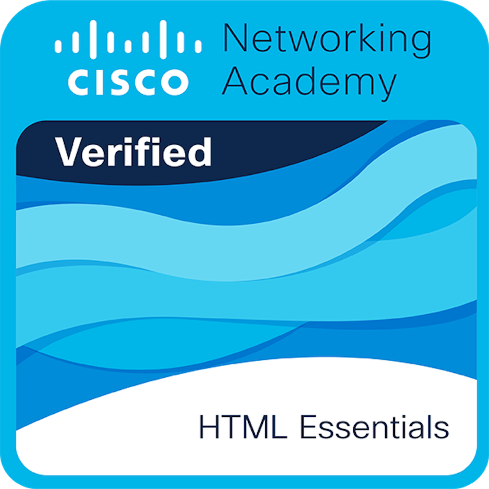
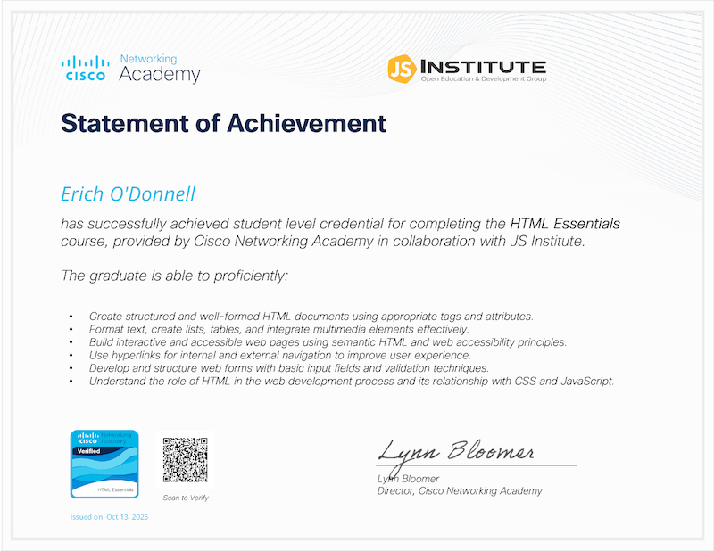
HTML Essentials
-
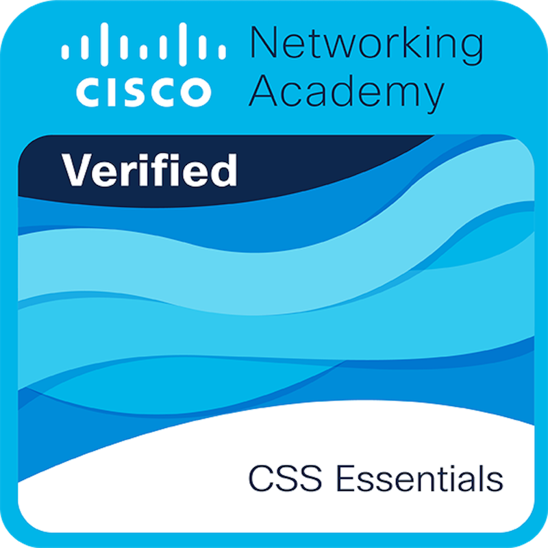
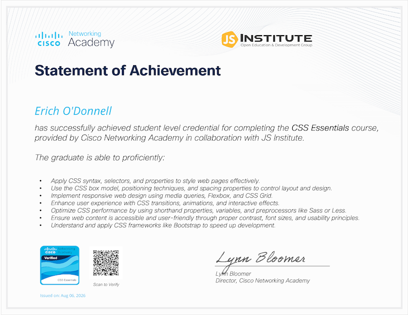
CSS Essentials
-
Certified Entry-Level Web Developer
-
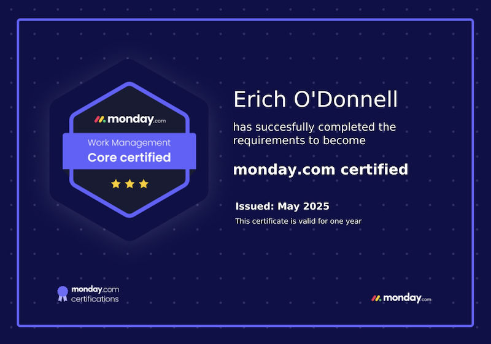
Monday.com Work Management Core Certification
-
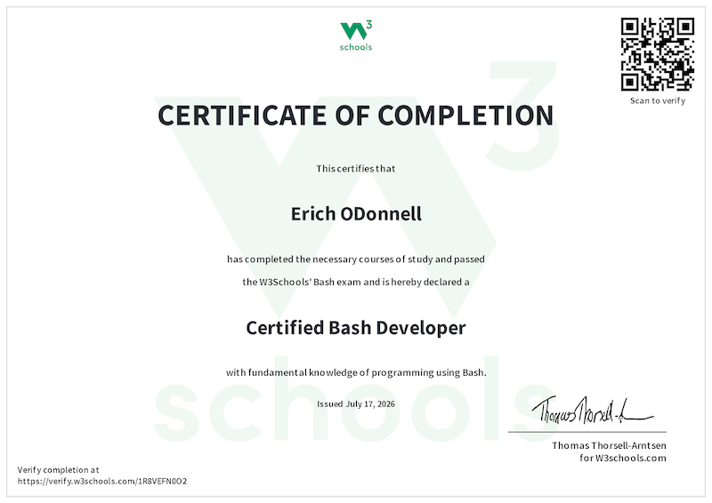
Bash Certificate
Skills
- Operations Management
- Production Coordination
- Customer Engagement & Relationship Management
- Team Leadership & Training
- Client Onboarding & Documentation
- Process Improvement & Workflow Optimization
- Communication & Conflict Resolution
- Forklift Operation
- CNC Machine Operation & Programming
- Inventory Control & Material Handling
- CRM Software
- Microsoft Office Suite
- Monday.com
- HTML
- CSS
Resume
Professional Experience
Northeast Fence & Iron Works, Inc.
Production Manager
- Directed daily operations for the Westmoreland Department.
- Managed production schedules, workflow efficiency, materials, and department organization.
- Operation of CNC machinery.
- Analysis of production data and reported insights for operational improvements.
Ironworker
- Prepared materials prior to powder coating process to ensure quality and consistency.
- Managed heating, painting, and curing processes as required.
- Handled post-production packaging and shipment preparation with zero product damage.
- Collaborated with production teams to meet deadlines and maintain quality standards.
Forklift Operator
- Led the refurbishment of multiple storage bays, improving organization, and creating additional workspace for smoother operations.
- Operated forklifts and other material-handling equipment to safely transport raw materials and finished products.
- Loaded and unloaded shipments of product from customers and vendors alike.
The GIANT Company
Sales Associate
- Supported sales through suggestive selling techniques and visually effective merchandising displays.
- Ensured compliance with food safety and sanitation standards, maintaining a spotless audit record.
- Served as acting department lead, coordinating daily activities and supervising team members.
- Delivered excellent customer service, assisting over 200 customers daily and resolving product inquiries efficiently.
Weis Markets
Assistant Department Manager
- Assisted the Department Manager in daily operations, team coordination, and merchandising.
- Reduced product losses and improved shrink control through better product rotation and quality inspection practices.
- Managed inventory, purchasing, and reconciliation, ensuring accurate reports.
- Mentored associates to enhance engagement and performance.
- Conducted internal audits for pricing, freshness, and compliance.
SEI Investments
Operations Analyst
- Reviewed and processed client onboarding documentation.
- Maintained client account data with 100% accuracy across internal systems.
- Collaborated with Compliance, Legal, and Client Services to resolve discrepancies and streamline onboarding process.
- Communicated promptly with clients to improve onboarding efficiency and overall satisfaction.
Greene Tweed
Operations Clerk
- Managed mailroom and document distribution for internal departments and clients.
- Processed invoices, purchase orders, and reports with accuracy and confidentiality.
- Logged shipments and deliveries to maintain traceability and prevent logistical discrepancies.
- Coordinated daily deliveries to ensure reliable and on-time distribution.
Projects
Portfolio Website
Personal portfolio website built with HTML. First website ever built.
Click here for project details.
Portfolio Website v2.0
An updated version of my website built with HTML and CSS.
Click here for project details.
Storage Bay Refurbishment at Northeast Fence & Iron Works, Inc.
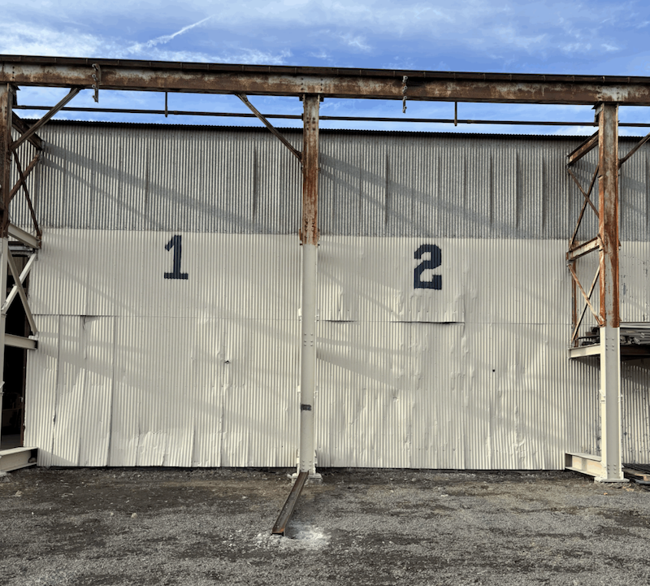
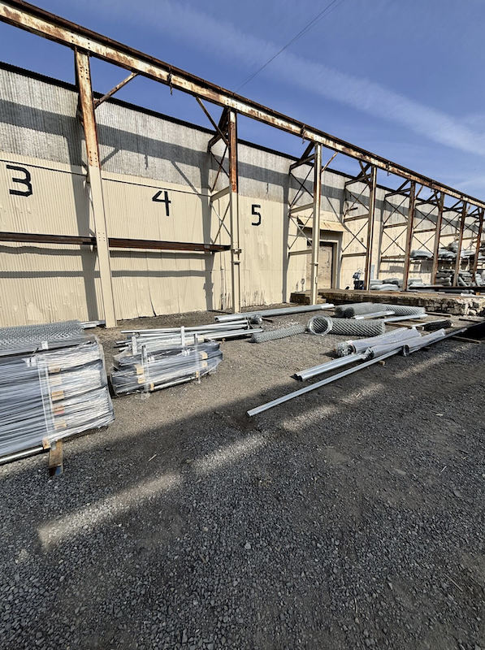
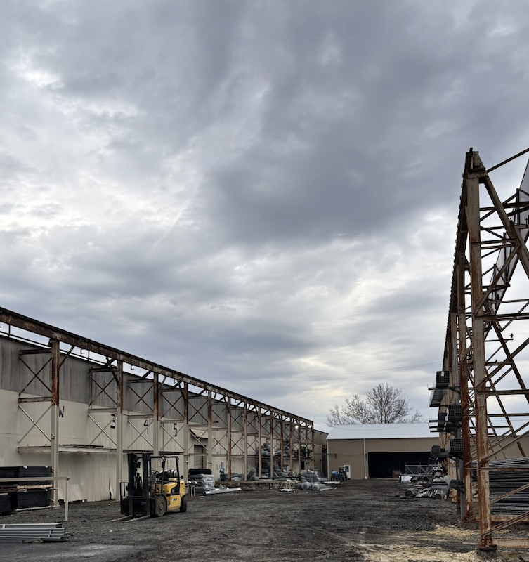
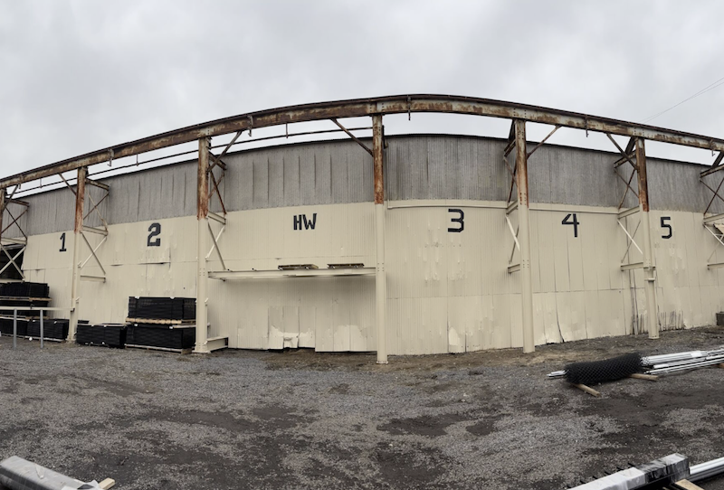
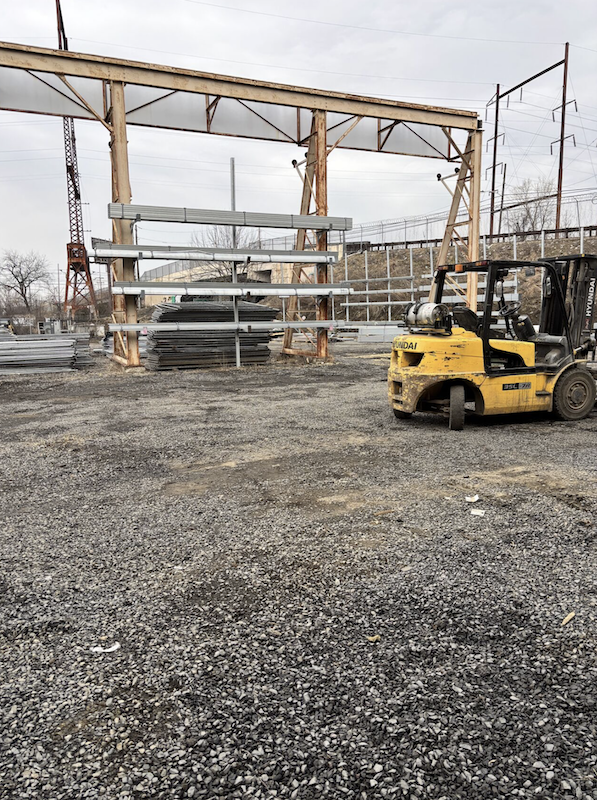
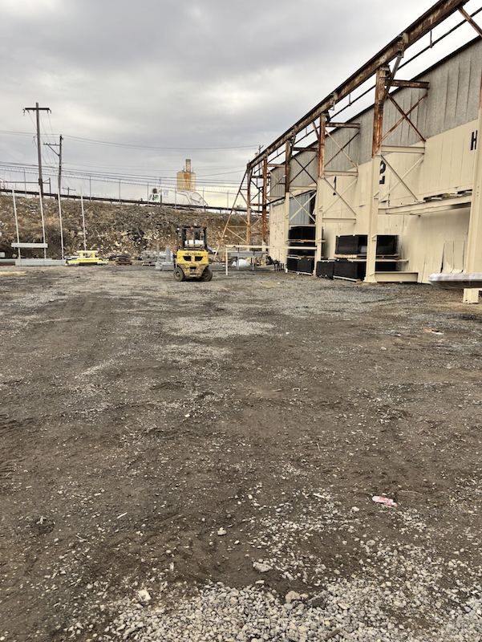
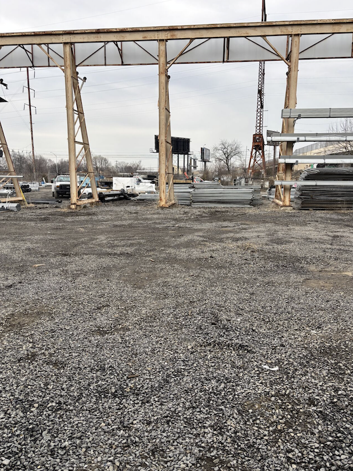
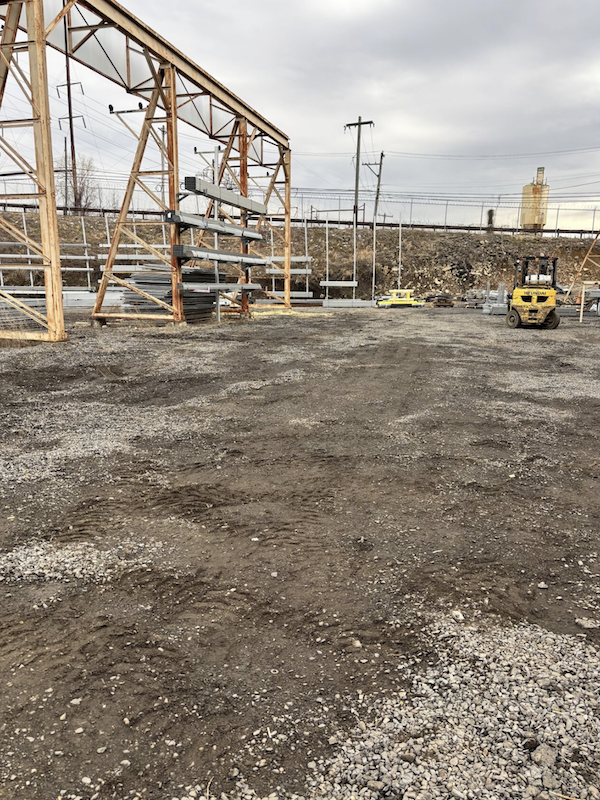
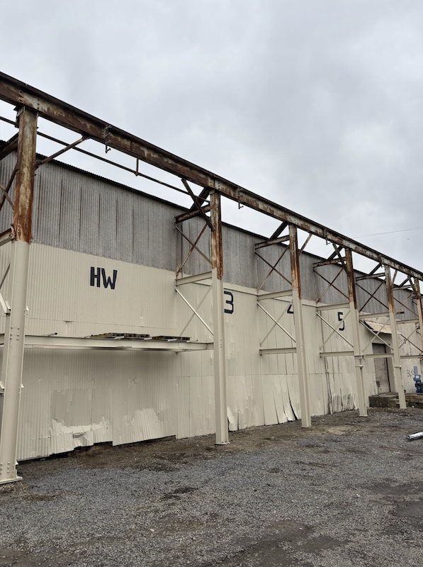
I led a month-long project to improve storage, organization, and workflow across our yard. The original plan involved refurbishing two storage bays for completed products from the powder coating department. However, as the benefits became clear, the scope expanded to six bays and the area directly across from them. Working with a small team, I led the on-site effort, primarily operating a forklift and Bobcat to remove disorganized materials and equipment, scrape away old paint, level the ground, apply fresh paint, and mark each bay with new stencils. The refurbished bays served as organized staging areas for the powder coating department and other teams. I also coordinated bay assignments for completed jobs and products prepared for installers each morning. The project brought structure to a previously congested space, improved visibility and workflow, and freed up valuable space in the powder coating yard. What began as a quick refurbishment developed into a meaningful operational improvement with benefits across multiple departments.
Powder Coating Departemnt Utility Closet Rebuild at Northeast Fence & Iron Works, Inc.
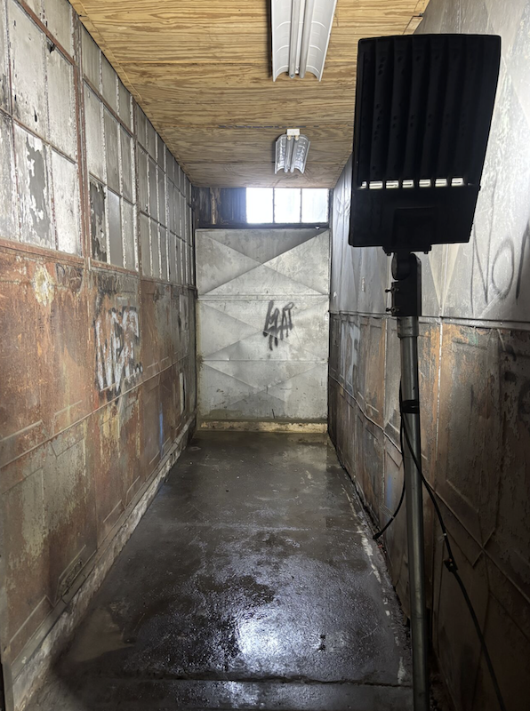
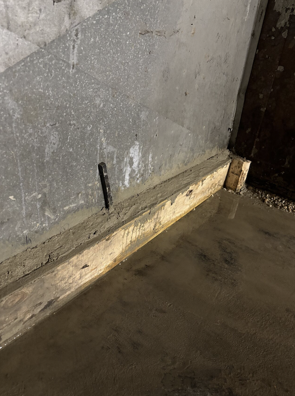
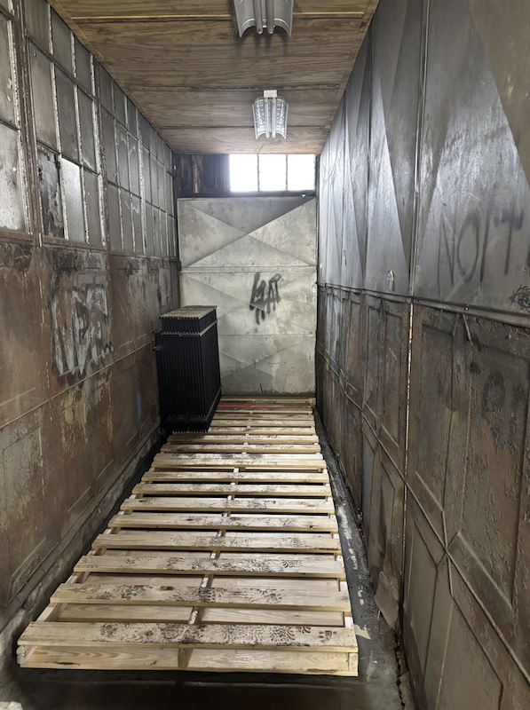
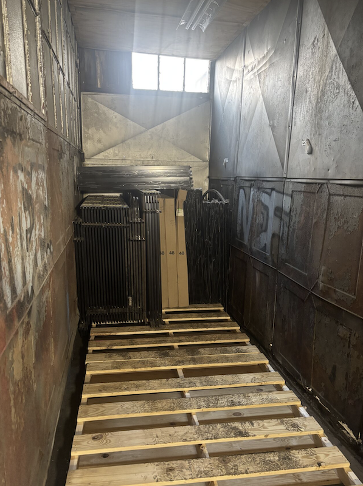
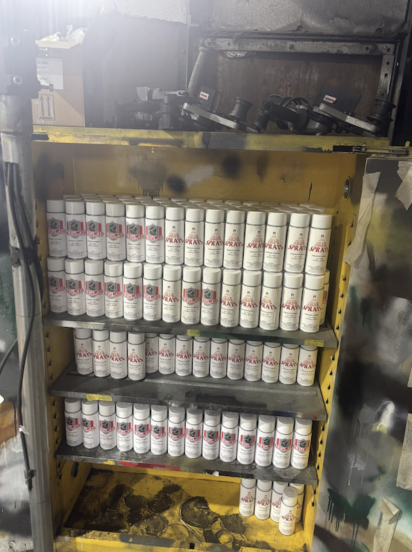
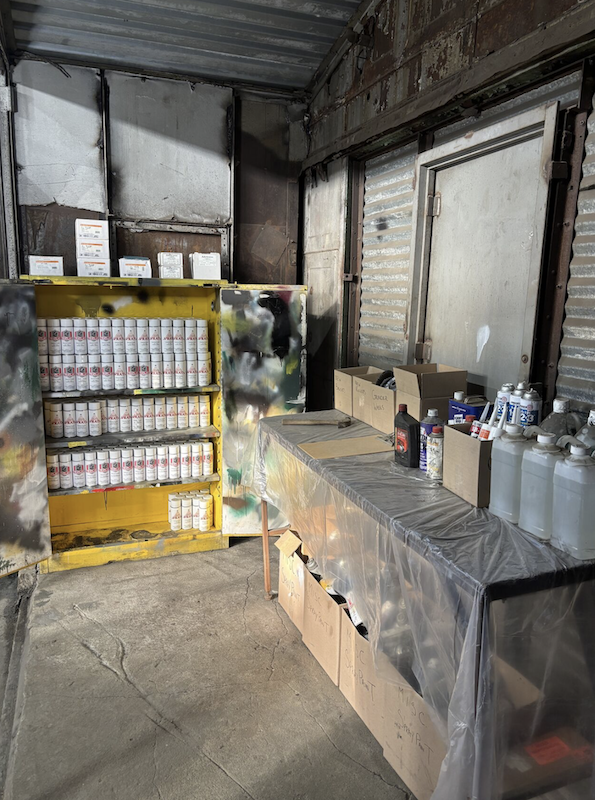
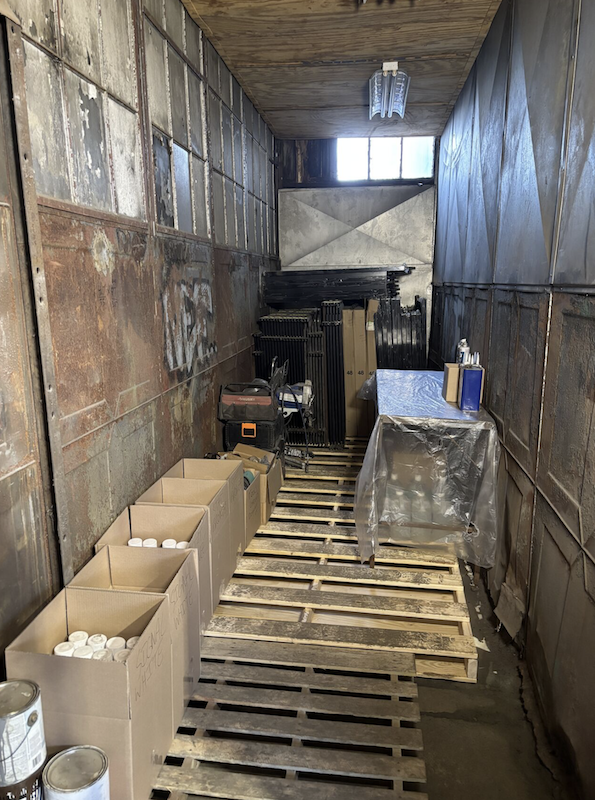
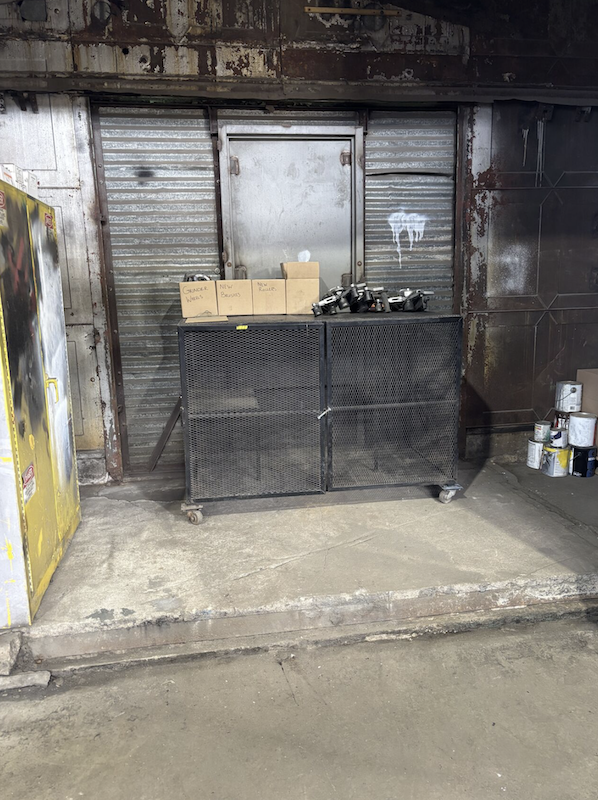
I led a small, dedicated crew in the complete renovation and reorganization of the powder coat department’s walk-in storage area. Over time, the space had become overcrowded and difficult to navigate, with disorganized inventory, excess touch-up spray, water damage, and a significant leak caused by a structural wall failure. Our team emptied and thoroughly cleaned the space, removed damaged materials, and poured a new concrete foundation to help prevent future water intrusion. We installed pallets to keep inventory off the floor and create a safer, more level walkway. We also introduced new storage containers and reorganized the inventory so materials could be easily identified and accessed. The completed renovation transformed an overdue maintenance issue into a clean, safe, and efficient storage area. I’m proud of the results and grateful for the hard work and commitment of everyone involved.
Sandblast and Powder Coating Storage Area Clean and Reorganization at Northeast Fence & Iron Works, Inc.
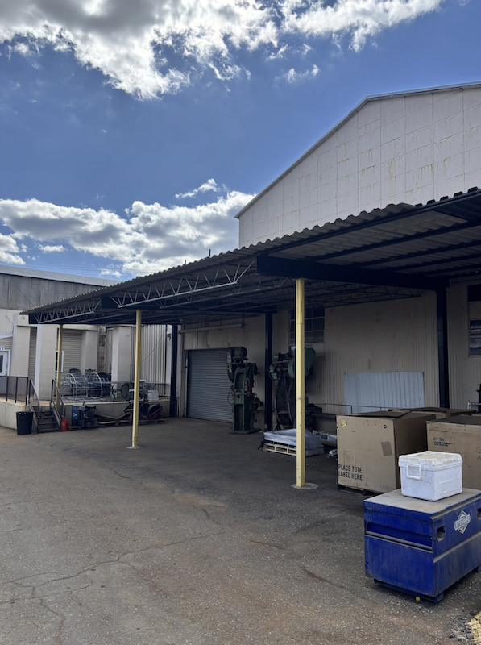
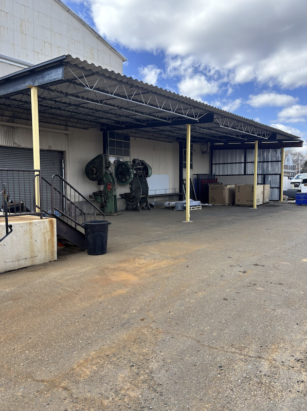
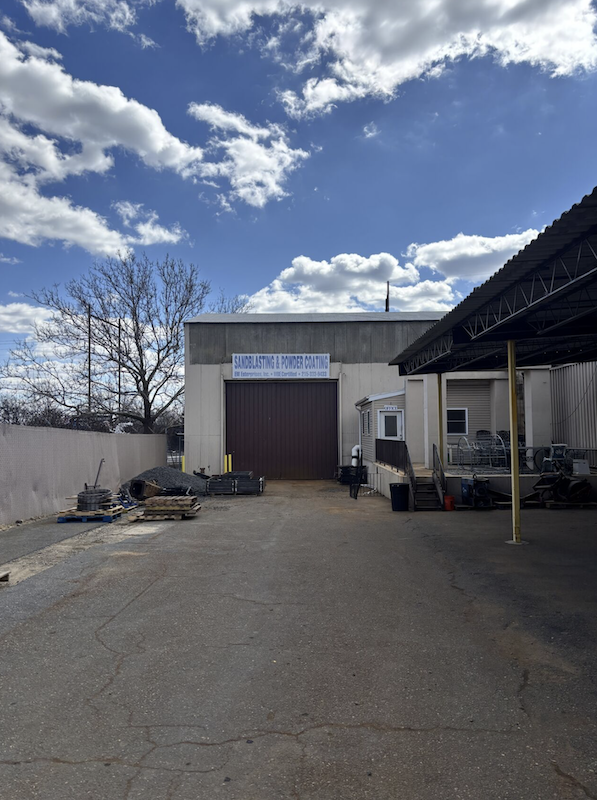
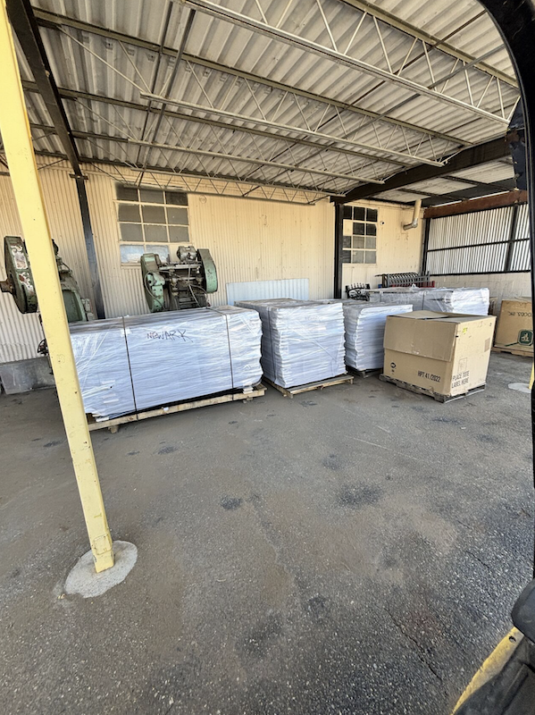
When our covered sandblasting and powder-coating storage area became overcrowded, finished products were being left exposed to weather, dirt, and potential damage. This created unnecessary rework, delayed deliveries, and added costs. I took ownership of the problem by using a forklift to relocate heavy equipment and materials, remove accumulated debris, and reorganize the available space. The improved layout created dedicated, protected storage for completed products while making the area cleaner, safer, and easier to navigate. Sandblasting removes rust, old coatings, and other contaminants from metal surfaces, preparing them for powder coating—a durable finish applied electrostatically and cured with heat. Once that process is complete, proper storage is essential to preserving the quality of the finished product. The result was more than a cleaner workspace. It was a practical improvement that helped protect product quality, reduce avoidable rework, improve workflow, and ensure finished items remained clean and ready for delivery.
Contact
Interested in working together? Feel free to reach out.
Email: erich_o@icloud.com
GitHub: github.com/CopyPaste-PasteCopy
LinkedIn: linkedin.com/in/erich-odonnell